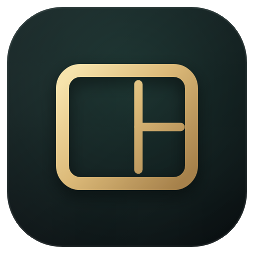

清框影 QingFramShadow
加载中…
本地照片加框工具 · 照片与设置不上传
87 个模板、92 种边框风格、EXIF 参数识别、拼图与批量导出，全本地渲染。
常见公共镜像（第三方，速度与可用性随网络变化，可随时清空回直连）：
https://ghproxy.net/{url} · https://gh-proxy.com/{url} · https://ghfast.top/{url}
也可以填自建反代的前缀；留空则直连 GitHub。下载完一律按 GitHub 清单里的 sha512 校验，对不上会丢弃重下。
快捷键
导入照片CtrlO
导入文件夹CtrlShiftO
粘贴剪贴板图片CtrlShiftV
撤销 / 重做CtrlZ/CtrlY/CtrlShiftZ
全选照片 / 画布元素CtrlA
导出当前图片CtrlE
复制图片CtrlShiftC
复制 / 粘贴选中元素CtrlC/CtrlV
同步边框到勾选照片CtrlD
适应窗口Ctrl0
保存模板CtrlShiftS
收起 / 展开预设栏Ctrl[
收起 / 展开参数栏Ctrl]
全屏沉浸展示CtrlShiftP
删除选中照片 / 元素Delete/Backspace
微移选中元素（Shift = 10px）方向键
切换照片←→
按住对比原图空格
输入框聚焦时，无修饰键快捷键停用；A/Z/Y 的全选、撤销、重做保留给文本编辑。
系统信息与诊断
版本-
安装类型-
运行时-
系统-
数据目录-
开源许可与致谢
基于 Electron、electron-updater、exifr、heic-convert（libheif）等开源项目构建。感谢所有模板、素材与测试贡献者。
用户协议 / 免责声明
本软件仅提供本地照片排版与导出工具，不存储、不传播用户照片。使用本软件导出成品，即表示您已阅读并同意以下声明：
1. 成品照片的商用、发布责任由用户承担。请自行确认照片内容、肖像权、著作权及发布平台规则。
2. 软件不对用户自行导入的 Logo / 图片主张任何权利。相关商标、著作权与使用授权由用户自行取得并负责。